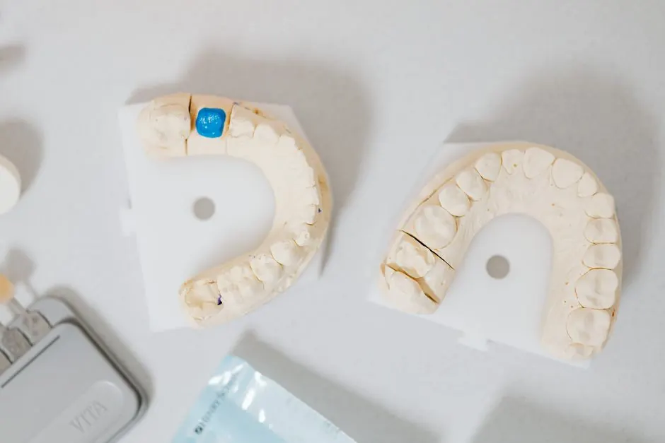
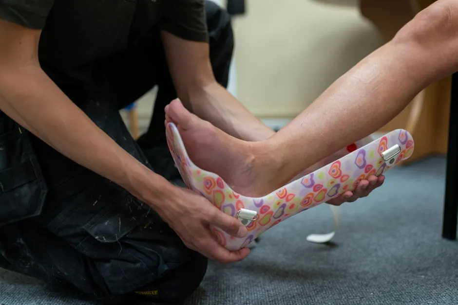

Swift and reliable solutions for your flooded basement.
Basement Flood Cleanup Spokane WA
Basement Flood Cleanup Spokane WA is a crucial service for homeowners facing water damage. Our basement water removal Spokane experts are ready to tackle flooding issues, ensuring your home is safe and dry.
Live dispatcherUpfront optionsBacked workmanship
What's included
What Our Basement Flood Cleanup Includes
Our Basement Flood Cleanup Spokane WA service covers comprehensive water removal, drying, and sanitization. Additional services like mold inspection can be included for a complete solution.
Water Extraction
We use powerful pumps to remove all standing water from your basement quickly and efficiently.
Drying and Dehumidification
High-capacity dehumidifiers are employed to ensure thorough drying, preventing mold growth.
Sanitization
We sanitize affected areas with EPA-approved solutions to eliminate harmful bacteria and odors.
Final Inspection
A complete inspection is conducted to ensure the area is safe and dry before we leave.
Service overview
Understanding Basement Flood Cleanup Spokane WA
Basement Flood Cleanup Spokane WA involves the removal of water and moisture from flooded basements, preventing further damage and mold growth. This process includes water extraction, drying, and sanitization, ensuring a thorough restoration.
Local Spokane customers often face flooding due to heavy rains, melting snow, or plumbing failures. Our Spokane Basement Flood Cleanup services help mitigate water damage, providing peace of mind and safeguarding your property from mold growth.

How we workWe verify the cause, compare realistic options, and confirm the repair before we leave.
The service timeline
What to Expect During Cleanup
The process flexes to the condition, but these checkpoints keep decisions clear.
Initial Assessment
Our technicians arrive promptly to assess the situation. Using advanced tools, they determine the extent of water damage and create a tailored cleanup plan.
Water Extraction
We utilize powerful pumps and vacuums to remove standing water quickly. This step is crucial to prevent further damage and starts the drying process.
Drying and Dehumidification
High-capacity dehumidifiers and air movers are deployed to dry out the affected areas. This process typically takes 24-48 hours, depending on the severity of the flooding.
Sanitization
After drying, we sanitize the area using EPA-approved cleaning solutions. This step is essential to eliminate bacteria and prevent mold growth.
Final Inspection
A final inspection ensures all moisture has been removed and the area is safe. We provide a detailed report of the work completed and any necessary follow-up actions.
Tools & methods
Tools and Methods for Effective Cleanup
Purpose-built equipment, used by trained technicians, so the job is done accurately the first time.
Moisture Meter
Used to detect moisture levels in walls and floors, ensuring thorough drying.
Infrared Camera
Identifies hidden moisture behind walls and ceilings to prevent mold growth.
Dehumidifier
Removes excess moisture from the air, speeding up the drying process.
HEPA Vacuum
Used to clean up any debris or contaminants, ensuring a safe environment.
Use cases
When to Use Basement Flood Cleanup Services
These examples show how the service framework adapts rather than forcing every call through one repair.
Mold Prevention Post-Cleanup
A flooded basement led to visible mold growth on walls and flooring. → Post-cleanup, we sanitized the area, and mold was eliminated, ensuring a safe environment.
Structural Integrity Restoration
Water damage had compromised the basement's structural integrity, with visible sagging. → We restored the structure and reinforced the walls, ensuring safety for the homeowner.
Problems we solve
Problems Solved by Our Cleanup Services
Our Basement Flood Cleanup Spokane WA services address common flooding issues, ensuring your home remains safe and dry.
Water damage from heavy rains
We provide rapid water removal and drying to prevent further damage and restore safety.
Mold growth due to flooding
Our cleanup process includes sanitization and mold prevention measures to ensure a healthy environment.
Structural damage from prolonged moisture
We address moisture issues promptly, ensuring your home's integrity is maintained.
Pricing process
Affordable Basement Flood Cleanup Pricing
$180 - $450 depending on scope
Extent of Water Damage
More extensive damage requires more time and resources, increasing costs.
Type of Water
Cleanup from contaminated water may require additional safety measures and procedures.
Location of the Flood
Basements in difficult-to-access areas may incur additional labor costs.
Customer reviews
What Our Customers Say
★★★★★
“After a heavy rain, my basement flooded, and I was overwhelmed. Spokane Mold Experts responded quickly and handled everything professionally. My basement is now dry and safe!”
★★★★★
“I had a major flooding issue in my retail space. The team was prompt, efficient, and very knowledgeable. Highly recommend their basement flood cleanup services!”
★★★★★
“I was impressed with how quickly Spokane Mold Experts handled my basement flooding. They were thorough and explained everything. I feel confident my home is safe now.”
What is the cost of Basement Flood Cleanup in Spokane?
The cost of Basement Flood Cleanup in Spokane typically ranges from $180 to $450, depending on the extent of the damage and the size of the area affected.
How to prevent basement flooding in Spokane?
To prevent basement flooding in Spokane, ensure proper drainage around your home, regularly clean gutters, and consider installing a sump pump.
What are the steps for Basement Flood Cleanup in Spokane?
The steps for Basement Flood Cleanup in Spokane include an initial assessment, water extraction, drying, sanitization, and final inspection to ensure safety.
How long does Basement Flood Cleanup take?
Basement Flood Cleanup typically takes 24 to 48 hours, depending on the extent of the flooding and the drying process required.
Related services
Related Services

Mold Inspection
Mold inspection is crucial after basement flooding. It identifies hidden mold growth, ensuring your home remains safe and healthy.Mold Testing
Mold testing helps determine the type of mold present in your home. This information is vital for effective remediation and prevention.Mold Remediation
Mold remediation services address existing mold issues, ensuring a safe environment after flood cleanup and preventing future growth.Ready when you are
Need Immediate Basement Flood Cleanup Spokane WA?
Contact us today for prompt and professional basement flood cleanup services. Our team is ready to restore safety to your home.
Talk with the local team
Request Basement Flood Cleanup
We invite you to reach out for any mold-related concerns. Our team is available 24/7 to assist you with your needs.